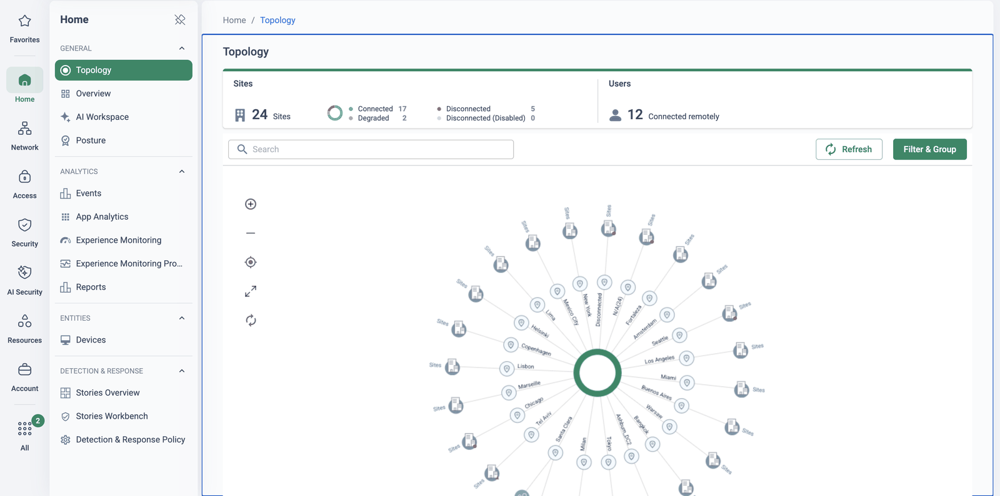
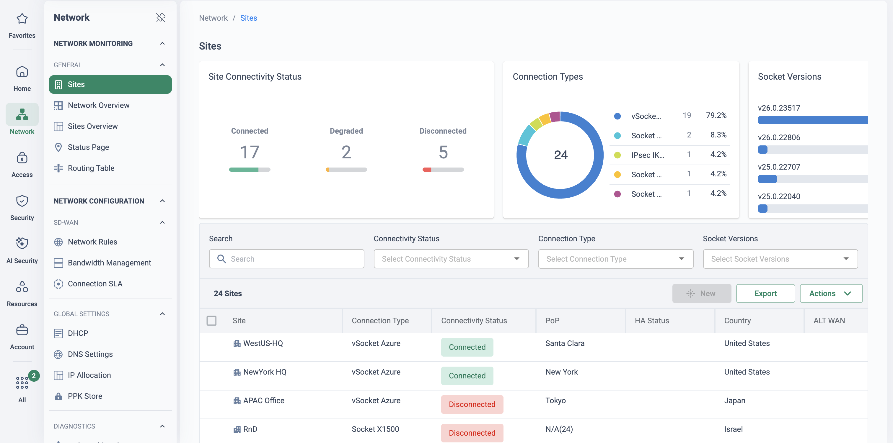

The on-ramp is an architecture decision
Bringing a cloud tenant onto the WAN is easy — Cato gives you three documented ways to do it. Choosing well is the harder, more valuable conversation. Pick a vSocket where an IPsec tunnel would have done, and you own a VM estate you didn't need. Pick IPsec for a replication-heavy datacentre workload, and you hit tunnel ceilings and internet-path variability. Pick an interconnect circuit for a two-week pilot, and the lead time alone outlives the project.
The objective: match the on-ramp to the cloud and the workload — deliberately, with the trade-offs on the table. Whichever you choose, the destination is the same: the tenant becomes a first-class site on the Cato WAN, governed by one policy set, visible in one console, routed over the same private backbone as every branch and datacentre. The choice affects the path in; it never fragments the platform.
This page is the comparison. For depth on each option, the library has a dedicated page: Cloud Datacentre Integration (vSocket and IPsec deployment in practice), IPsec Site Design (tunnel mechanics, IKEv1 vs IKEv2) and Cloud Interconnect (circuits, availability and the two-track PoV).
“For each cloud you run production in — how does it reach the rest of the estate today, what does that path cost per month, and who chose it? Was it a decision, or a default someone inherited?”
Three on-ramps, side by side
Everything in this table comes from the Cato knowledge base and the cloud providers' own documentation — sources footnoted below, figures correct as of September 2026. Where the KB publishes no number, the cell says so rather than guessing.
| vSocket | IPsec site | Cloud Interconnect | |
|---|---|---|---|
| What it is | Cato's virtual Socket — a VM inside the VNet/VPC, building encrypted DTLS tunnels to the nearest PoP; same CMA management plane as a physical Socket1 | A Cato site terminating IKEv1/IKEv2 tunnels from a third-party device — here, the cloud provider's native VPN gateway; no Cato footprint in the cloud2 | A private layer-2 virtual circuit from the cloud's interconnect fabric into a Cato PoP, stitched by a fabric provider (Equinix, Megaport, Console Connect, Interxion)3 |
| Per-cloud availability | Azure ✔ · AWS ✔ · GCP ✔ · OCI ✖ — the KB lists vSocket platforms as AWS, Azure, GCP and VMware only; OCI connects via IPsec or interconnect1 | Azure ✔ (VPN Gateway / vWAN) · AWS ✔ (VGW or Transit Gateway) · GCP ✔ (HA VPN) · OCI ✔ (Site-to-Site VPN — Cato's documented OCI design)4 | Azure ✔ (ExpressRoute) · AWS ✔ (Direct Connect) · GCP ✔ (Partner Interconnect) · OCI ✔ (FastConnect) — subject to PoP availability per location3 |
| Typical throughput | Azure: 1 Gbps (2-NIC) / 2 Gbps (3-NIC, accelerated networking) · GCP: up to 2 Gbps · AWS: no published cap — instance-dependent, c5n.xlarge suggested above 2 Gbps5 | Up to 3 Gbps per IPsec site (IKEv1 and IKEv2) — but the cloud gateway adds its own per-tunnel ceilings: AWS 1.25 Gbps per standard tunnel, GCP ≈1–3 Gbps per tunnel (250k pps), Azure SKU-dependent5,6 | Up to 10 Gbps — the highest of the three; minimum 500 Mbps on an Enforcement Model licence (no minimum on Bursting)3,5 |
| HA model | Two vSockets per site; failover actuation differs per cloud — Azure: floating IP via API (NIC update up to 120 s) · AWS: route-table rewrite · GCP: internal load balancer + VRRP (~3–5 s)7 | Up to 6 active tunnels per HA role — all primary tunnels to one PoP, all secondary to a different PoP; no automatic PoP re-homing (unlike Sockets)2 | Active/passive only, two circuits to two different Cato PoPs; single circuit supported; circuits never load-share3 |
| Encryption | DTLS-encrypted tunnels to the PoP — encrypted end to end by design1 | IPsec encrypted; sites at 100 Mbps or more must use AES 128/256 GCM-16 (CBC only below 100 Mbps)2 | Private but unencrypted — Cato markets “no encryption overhead” on the L2 circuit; the mandatory MD5 field is BGP session authentication, not traffic encryption3 |
| BGP & routing | BGP supported — but not with AWS vSocket HA, and on Azure only from Socket v14.0 does BGP peer on the floating IP and survive failover7 | One BGP neighbour per tunnel, max two per connection; secondary steered by AS-path prepend; 1,024 received prefixes per neighbour by default; IPv4 only8 | BGP mandatory — /30 peering, MD5 required; cloud-side prefix limits apply (AWS DX 100 advertisements, Azure 1,000 IPv4 advertised, OCI 2,000 with a 60-minute BGP teardown if exceeded)3 |
| Deployment effort & time-to-live | Marketplace wizard or Terraform plus cloud-side plumbing (subnets, IAM roles / managed identities, route tables); live in hours; reboot required on AWS before first connection9 | Fastest — no footprint to deploy; configure the gateway, tunnels and BGP and the site is live in minutes to hours (OCI tunnels can take up to 15 minutes to establish)4 | Slowest — circuit order plus fabric provisioning; on-demand from the CMA at “immediately available” PoPs, otherwise published lead times of 3 weeks to 3 months10 |
| Cloud-side cost components | The VM itself (Standard_D8ls_v5 / a certified EC2 type / n2-standard-4), public IPs and standard egress — no premium networking product9 | Gateway fees — Azure hourly per SKU; AWS $0.05/hr per connection (plus TGW attachment and data processing if used); GCP ~$0.05/hr per tunnel; OCI positions VPN Connect as egress-led (verify per account) — plus egress on all four6 | Fabric port / virtual-circuit charges, the cloud's interconnect product charges (DX / ExpressRoute / Partner Interconnect / FastConnect), and the Cato interconnect bandwidth licence; OCI billing starts once provisioned or after 30 days3 |
| Operational model | You own the cloud resources (VM, subnets, route tables); Cato owns the software — zero-touch provisioning, CMA-managed, full site telemetry1 | The cloud provider operates the gateway; Cato holds only site config — you inherit the gateway's limits, SLAs and upgrade cadence2 | No appliance and no tunnel to run; circuit lifecycle sits with the fabric provider and your Cato representative3 |
| When it wins | Production estates in a vSocket-supported cloud wanting the full site experience — QoS, deep analytics, last-mile optimisation inside the VNet/VPC | Quick pilots, low-bandwidth spokes, clouds without a vSocket (OCI), and estates already standardised on cloud VPN hubs; can run on an SSE licence11 | Deterministic latency, sustained high throughput and compliance-driven private paths — datacentre-class flows that justify a wire |
Sources (Cato knowledge base and provider docs, accessed 12 Sep 2026): 1 What are Cato Sockets and Connecting Sites to the Cato Cloud · 2 Configuring IPsec IKEv2 Sites · 3 Getting Started with Cloud Interconnect Sites and the per-cloud interconnect articles · 4 Redundant VPN Connection to Oracle Cloud using BGP · 5 Cato Cloud Thresholds and Limits · 6 Azure VPN Gateway SKU, AWS Site-to-Site VPN quota/pricing and GCP Cloud VPN documentation · 7 the per-cloud vSocket HA articles (Azure, AWS, GCP) · 8 Configuring BGP Neighbors for an IPsec Connection · 9 the per-cloud vSocket deployment articles · 10 Cloud Interconnect Availability · 11 Managing Site Bandwidth — vSocket sites require SASE licences; IPsec sites take SASE or SSE.
Per-cloud at a glance
| Cloud | vSocket | IPsec | Cloud Interconnect |
|---|---|---|---|
| Azure | ✔ Supported — Marketplace or manual VHD; HA via zones or availability sets; the usual first choice | ✔ Supported — VPN Gateway (AZ SKUs) or vWAN; active-active pairs map to Cato's two-PoP tunnel model | ✔ Supported — ExpressRoute provider circuits via Equinix ECX |
| AWS | ✔ Supported — Marketplace/CloudFormation or manual AMI; HA supported, but no BGP with HA | ✔ Supported — VGW or Transit Gateway; ECMP beyond 1.25 Gbps per tunnel needs the TGW | ✔ Supported — Direct Connect private virtual interface via the fabric provider |
| GCP | ✔ Supported — Marketplace or Cato Terraform module; HA (zonal pair behind an internal LB) since March 2026 | ✔ Supported — HA VPN, BGP mandatory; the cleanest mapping to Cato's primary/secondary model | ✔ Supported — Partner Interconnect VLAN attachments |
| OCI | ✖ Not available — no OCI vSocket exists in the KB; plan IPsec or interconnect from the start | ✔ Supported — Site-to-Site VPN to a DRG; Cato's reference design is dual tunnels to two PoPs with BGP | ✔ Supported — FastConnect partner circuits; the PoP must be in the same OCI region as the tenant |
Cato Cloud Interconnect was called “Cato Cross Connect” until May 2024 — older docs, SKUs and blog posts use the old name for the same product. (The generic colo “cross-connect” — the physical fibre patch in an Equinix or Interxion facility — is still what physically delivers the circuit into the Cato PoP.)
What the platform delivers on each on-ramp
The architecture table above is about plumbing; this matrix is about capability. Everything that runs in the PoP — the security stack, egress routing, network optimisation — applies whichever door the traffic came through. The SD-WAN and experience-monitoring family is different: it needs a Socket at the site, so on IPsec and interconnect sites those rows go dark.
| Capability | vSocket | IPsec site | Cloud Interconnect |
|---|---|---|---|
| Secure WAN connectivity | ✔ | ✔ | ✔† |
| Network optimisation | ✔ | ✔ | ✔ |
| Next-gen WAN / internet firewall | ✔ | ✔ | ✔ |
| IPS | ✔ | ✔ | ✔ |
| Anti-malware / NG anti-malware | ✔ | ✔ | ✔ |
| Egress routing | ✔ | ✔ | ✔ |
| QoS | ✔ | ✖* | ✖* |
| SD-WAN features | ✔ | ✖ | ✖ |
| High availability | ✔ | ✔+ | ✔‡ |
| Off-cloud recovery | ✔ | ✖ | ✖ |
| Off-cloud transport | ✔ | ✖ | ✖ |
| Last-mile monitoring | ✔ | ✖ | ✖ |
| Digital Experience Monitoring probes | ✔ | ✖ | ✖ |
| Routing | Static / BGP | Static / BGP | BGP only |
* Downstream QoS only · † Private Layer 2 link; no encryption · ‡ Active/passive HA across two PoP locations · + Active/Active/Active tunnels across two PoP locations. Capability matrix from Cato SE field material (September 2026); the encryption, HA and routing notes align with the KB sources footnoted above.
Scenario cards
The table gives the facts; these are the calls you'll actually make. Each recommendation follows from the documented characteristics above — not from habit.
Production estate in one VNet/VPC → vSocket
A production Azure, AWS or GCP network with real users and workloads behind it deserves the full site experience: QoS, deep per-site analytics and an HA pair inside the network. On Azure, a single hub vSocket serves multiple spoke VNets via peering — the KB's documented, cost-efficient scale-out. Budget hours, not weeks, and remember it needs a SASE licence.
Quick pilot, low-bandwidth spoke, or OCI → IPsec
Nothing to deploy: the cloud's own gateway builds IKEv2 tunnels to two Cato PoPs and the region is on the WAN in minutes. Right for pilots, spokes that will never push gigabits, estates standardised on cloud VPN hubs — and it is Cato's documented path for OCI, where no vSocket exists. Accept the trade: gateway per-tunnel ceilings, an internet last mile, and no automatic PoP re-homing.
Deterministic latency or compliance-driven private path → Cloud Interconnect
Replication, bulk data movement and latency-sensitive DC-to-cloud flows justify a wire: up to 10 Gbps over a private L2 circuit, no tunnel overhead, no internet in the path. Plan for the physics — circuit lead times run from on-demand to three months — and note the circuit itself is unencrypted by design, which some compliance regimes will want discussed, not discovered.
Multi-cloud, mixed estate → combine them
The options are per-site choices, not a platform decision: vSockets in the production Azure and AWS hubs, IPsec for the GCP pilot and the OCI tenant, an interconnect circuit where one region's replication traffic justifies it. All land on the same backbone, in the same policy set, in the same console — the mix is normal, not a compromise.
Which on-ramp? A guided pick
Answer for one cloud site at a time and the helper ranks the three on-ramps using only the documented facts on this page — availability, throughput ceilings, HA mechanics, encryption, licences and lead times. It is rule-of-thumb guidance, deliberately not a price calculator: the costs that usually decide (egress rates above all) live in your provider's rate card, not in this library.
Open the guided pick — seven quick answers, ranked verdicts
Which wins when — the same rules, static
| If this is true | Reach for | Why (documented) |
|---|---|---|
| Sustained > 3 Gbps per site | Cloud Interconnect | Rated up to 10 Gbps; vSocket tops out at 2 Gbps on Azure and GCP, IPsec at 3 Gbps per site |
| In-transit encryption mandated | vSocket or IPsec | vSocket runs DTLS-encrypted tunnels; IPsec encrypts with AES-GCM (required at 100 Mbps and above). The interconnect circuit is private but unencrypted — MD5 is BGP session auth only |
| SD-WAN, full QoS or DEM in the cloud site | vSocket | SD-WAN features, full QoS, last-mile monitoring and DEM probes are vSocket-only; IPsec and interconnect sites get downstream QoS only |
| SSE-only licence estate | IPsec | IPsec sites run on SASE or SSE licences; vSocket sites need SASE |
| Live this week | vSocket or IPsec | vSocket is a marketplace-wizard deployment with zero-touch provisioning (Terraform on GCP); IPsec is cloud-gateway configuration. Interconnect lead times run from CMA on-demand to 3 months by PoP (as of Sep 2026) |
| The tenant is OCI | IPsec or FastConnect | No OCI vSocket exists in the KB; Cato's documented OCI paths are IPsec and Cloud Interconnect via FastConnect, where the Cato PoP must be in the same Oracle Cloud region as the tenant |
| Heavy sustained egress | Cloud Interconnect | Cato positions it for data centres with a high volume of traffic — then compare your provider's internet-egress vs interconnect-egress rates; this library quotes no prices |
| Seconds-level failover on GCP | vSocket HA | GCP vSocket HA fails over behind an internal load balancer, typically 3–5 s (March 2026); Azure's floating-IP move can take up to 120 s |
Where this sits in the Cato SASE platform
- Azure, AWS and GCP can attach by vSocket: a Cato VM in the VNet or VPC building DTLS tunnels to the PoP.
- All four clouds, including OCI, can attach by IPsec from the provider's native VPN gateway.
- A private layer-2 Cloud Interconnect circuit via a fabric provider reaches the PoP with no tunnel.
- Whichever door is used, the tenant lands on the same backbone, policy set and console as every site.
Four clouds, three doors, one WAN
However a tenant connects, it terminates at a Cato PoP and joins the same global private backbone. The on-ramp decides the path in — appliance tunnel, gateway tunnel or private circuit — and nothing else: policy, analytics, routing and the rest of the estate are identical on the far side of the PoP.
A decision, not a default
Availability, throughput, HA mechanics, encryption and cost — compared per cloud, so the on-ramp is chosen on evidence rather than inherited.
One platform behind every door
Whichever on-ramp carries the traffic, the tenant lands in the same rulebase, topology and analytics as every physical site — the choice never fragments policy.
Mix freely, per site
vSocket here, IPsec there, a circuit where the flows justify it — all three coexist in one account, and your demo tenant runs them side by side.
Honest numbers
Every figure on this page is KB- or provider-documented, dated, and where Cato publishes no number (AWS vSocket throughput), the page says so instead of inventing one.
How to run the demo
Which of the four clouds run production? Which already have connectivity, and by what method? Any OCI in the estate is your opening — it forces the architecture conversation this page exists for, because the default answer (vSocket) is not available there.
-
Frame the choice on the comparison table
Open on the table above: three on-ramps, ten dimensions, four clouds. The message is not “pick our favourite” — it is that one platform gives them all three, so the choice can follow the workload.
-
Show all three living in one topology
Monitor → Topology
The demo tenant runs the mix this page recommends: vSocket sites in Azure (Azure-UKS-Hub-vSocket) and AWS (eu-west-2, HA pair), IPsec sites from an Azure vWAN hub and aws-sydney-ipsec, and a Cloud Interconnect site. One map, one WAN — the on-ramp is invisible at this altitude, which is exactly the point.
-
Walk the site list — three site types, one console
Network → Sites
Filter to the cloud sites and show the site types side by side. Open the AWS vSocket site's HA status (primary active, secondary standby), then the vWAN IPsec site's tunnel configuration (primary and secondary PoP destinations), then the Cloud Interconnect site's definition — no serial, no tunnel parameters, just PoPs, bandwidth and BGP.
-
Show the routing story
Network → Sites → Site Configuration
On the IPsec site, walk the BGP neighbour config — one neighbour per tunnel, the secondary preferred down by AS-path prepend. On the interconnect site, the same BGP discipline over a /30 with MD5. Same routing model, different transport underneath.
-
Be honest about the interconnect site
The Cloud Interconnect site is a configuration example — it is not passing traffic, and a live view needs a provisioned circuit. Walk its config and the availability/lead-time story; for live graphs, pivot back to the vSocket site. Honesty here sells the whole library.
-
Close per their estate
Put their clouds against the per-cloud matrix: “your Azure hub wants a vSocket, the GCP pilot is an afternoon of IPsec, and the OCI tenant was never going to take an appliance — here is what it takes instead.” Then hand them the deep-dive page for whichever option they lean toward.


How to prove it in the customer's tenant
This PoV proves a decision, not just a deployment: that the on-ramp chosen for each cloud was the right one, with measured evidence behind it. Run it inside the frame from Running a Cato PoV — criteria agreed at the workshop before anything is configured, every artefact dated on its register. The shape: a decision workshop against the comparison table, then one candidate on-ramp deployed per pilot cloud (usually a vSocket in the primary cloud and IPsec in a second cloud or OCI), measured and failed over. Cloud Interconnect joins as a design-validation track only — its lead times put live circuits outside most PoV windows, and the Cloud Interconnect page carries the two-track runbook for exactly that.
Success criteria
| Criterion | What we demonstrate | Evidence artefact | Where it lives in the CMA |
|---|---|---|---|
| On-ramp decision recorded | Each pilot cloud mapped against the comparison table with the chosen option and the reasons — availability, throughput need, licence type, lead time | A one-page decision matrix from the workshop, on the register, signed by the customer's network owner | The workshop record (plus this page as the reference) |
| Candidate on-ramps live | The chosen option deployed per pilot cloud — vSocket HA pair and/or IPsec site with primary and secondary tunnels to two different PoPs — each rendered in the topology beside the physical estate | Topology view; vSocket HA status or IPsec tunnel status showing both PoP connections up | Monitor → Topology · Network → Sites |
| Throughput & latency evidence | A repeatable timed transfer and round-trip measurement, branch → cloud workload, on each deployed on-ramp — results consistent with the configured bandwidth and the documented ceilings (vSocket instance class; 3 Gbps IPsec site limit and the cloud gateway's per-tunnel cap) | Transfer timings and RTT figures alongside the site's real-time throughput graphs, same run, dated — comparative table if two on-ramps were deployed | Network → Sites → Site Monitoring → Real Time |
| Failover demonstrated per option | vSocket: primary stopped in a change window, secondary takes over (route table repointed on AWS / floating IP moved on Azure). IPsec: primary tunnel dropped, traffic continues on the secondary tunnel to the second PoP via BGP | HA/tunnel status before, during and after; BGP peer state-change events; reachability checks either side | Network → Sites · Home → Events |
| One policy set across on-ramps | A single WAN Firewall rule governing branch-to-cloud traffic on both deployed on-ramps — proof the choice of transport never forked the policy | The rule plus its events showing hits against both cloud sites | Security → WAN Firewall · Home → Events |
- Scope: one or two pilot clouds with representative workloads, one branch socket as the measurement source, and the option chosen per cloud at the workshop — not mid-PoV.
- vSocket cloud-side (if chosen): marketplace/deployment rights (AWS: Marketplace, CloudFormation, IAM roles, key pairs; Azure: owner permissions on the resource groups — the HA script creates a managed identity with Contributor on both VMs; GCP: a service account with the documented roles); three subnets (MGMT/WAN/LAN); public DNS resolution from the VNet/VPC; on AWS remember the post-deploy reboot.
- IPsec cloud-side (if chosen): the gateway at a BGP-capable tier (not Azure Basic SKU), a distinct public source IP per tunnel, and the BGP sheet agreed early — ASNs, peer IPs, and Cato's defaults (ASN 64515, 1,024 prefixes per neighbour). On AWS, decide VGW vs Transit Gateway up front: ECMP beyond 1.25 Gbps per tunnel needs the TGW.
- Cloud Interconnect (design track only): check the availability list for the customer's PoPs on day one and put the lead time on the table; the circuit order plan is the deliverable, not a live circuit.
- Licences: SASE site licences for vSocket sites; IPsec sites run on SASE or SSE; interconnect bandwidth is licensed with a 500 Mbps minimum on Enforcement Model accounts. No TLS inspection needed — this is a transport PoV.
- Change windows: booked for the failover tests, with the cloud platform team present — the consoles being failed over are theirs.
Configuration walkthrough
-
Run the decision workshop
Walk each pilot cloud through the comparison table and record the choice and the reasons in the decision matrix. Force the OCI row if OCI is present — it removes the vSocket default and makes the exercise real. Agree the measurement plan (file size, schedule, source branch) at the same sitting.
-
Deploy the vSocket candidate
Network → Sites
Create the site (the CMA issues the serial), deploy from the marketplace or Terraform, wire the route tables, and validate HA before the evidence days. The Cloud Datacentre Integration PoV runbook carries the step-by-step, including the IAM policy for AWS HA and the classic plumbing traps.
-
Deploy the IPsec candidate
Network → Sites
IKEv2 site, primary and secondary tunnels to two different PoPs, one BGP neighbour per tunnel, GCM ciphers (mandatory at 100 Mbps and above). Cato's Terraform modules (terraform-cato-ipsec-aws / -azure) stand the integration up as code. Tunnel mechanics, proposal discipline and troubleshooting live on IPsec Site Design — the Cato side is identical whether the peer is an ASA or a cloud gateway.
-
Build the single WAN Firewall rule
Security → WAN Firewall
One rule: source = the pilot branch, destination = both cloud sites, action Allow, Track Event. That one rule matching traffic over two different transports is the fifth criterion proving itself.
-
Run the evidence days
Network → Sites → Site Monitoring → Real Time Home → Events
Timed transfers and RTT per on-ramp, same file, same hour, read against the real-time graphs — parallel streams for the throughput runs, since a single TCP flow will not fill a multi-gigabit path. Then the failover windows: stop the primary vSocket and watch the takeover; drop the primary IPsec tunnel and watch BGP move traffic to the secondary PoP. Every capture dated, on the register, against its criterion.
Troubleshooting
vSocket deployed but never connects
In order: the post-deploy reboot was skipped (documented requirement on AWS), outbound traffic to the Cato Cloud is blocked by the security group, or the VNet/VPC cannot resolve public DNS — the Azure KB is explicit that the vSocket must reach a public DNS server.
IPsec proposal mismatch
IKEv2's NO_PEER_PROPOSAL_SELECTED means the two menus don't intersect. Take the CMA off Automatic and set exact Init/Auth parameters matching the gateway line for line — and remember the GCM rule: sites at 100 Mbps+ must use AES 128/256 GCM-16.
Second tunnel won't come up
The KB's rule for stacking tunnels: each active tunnel within an HA role must use a different public IP address. The cloud gateways provide them by design — Azure active-active gives each instance its own IP; GCP HA VPN has two interfaces; on AWS each connection has two tunnel endpoints — so map each gateway interface to its own Cato tunnel rather than presenting one IP for all.
Failover test fails on AWS
The vSocket HA mechanism is the route-table API call and nothing else: check the IAM actions (CreateRoute / DescribeRouteTables / ReplaceRoute), UDP 20480 open between LAN interfaces, and both LAN subnets on the same route table. And remember BGP is not supported with AWS vSocket HA — don't debug what can't work.
Asymmetric paths muddy the measurements
OCI sends VCN return traffic down any up tunnel — land both OCI tunnels on the same Cato site as primary/secondary. And when two on-ramps to the same cloud coexist, prefer one deliberately via BGP and verify both directions use it before timing anything.
Throughput below expectation
Check the ceilings in order: single TCP stream (use parallel streams), the configured last-mile bandwidth on the site, the cloud gateway's per-tunnel cap (AWS 1.25 Gbps standard tunnel), the vSocket size (Azure 2-NIC tops out at 1 Gbps), then the 3 Gbps IPsec site limit. The lowest one is what you measured.
Gotchas & exit
- OCI has no vSocket — the choice there is IPsec or FastConnect interconnect, and pretending otherwise at the workshop costs you the deployment week when it surfaces.
- Per-tunnel ceilings are real — 3 Gbps is the IPsec site limit reached with multiple tunnels; the cloud gateway caps each tunnel lower (AWS 1.25 Gbps standard), and no per-tunnel Cato figure is published. Never promise 3 Gbps through one tunnel.
- Interconnect lead times are physics — on-demand at some PoPs, three weeks to three months at others. Keep Cloud Interconnect on the design track and scope any live circuit as the post-PoV expansion motion.
- The interconnect circuit is unencrypted by design — Cato positions “no encryption overhead” as the feature it is, but say it out loud in any compliance-sensitive engagement; MD5 authenticates the BGP session, not the traffic.
- HA asymmetries per cloud: AWS vSocket HA has no BGP and no alt-WAN; Azure failover can take up to 120 seconds (write the criterion accordingly); GCP HA needs vSocket 24.0.20395+. IPsec sites never re-home PoPs automatically — the secondary tunnel is the failover, so configure it.
- Licence types differ: vSocket sites need SASE licences; IPsec sites can run on SSE — which occasionally decides the option all by itself.
Delete the PoV WAN Firewall rule and the pilot sites from the CMA, then the cloud side: CloudFormation stack or resource-group items and Elastic IPs for a vSocket (plus the HA IAM role or managed identity), the gateway connections and any TGW attachments for IPsec (gateway hourly fees keep billing until deleted), and cancel any interconnect provider-side orders before their billing starts. The decision matrix and the evidence register survive — they are the design input for production, whichever way the decision lands.
Resources
Documentation
- Connecting Sites to the Cato Cloud — the three methods
- Cato Cloud Thresholds and Limits — the throughput figures
- Configuring IPsec IKEv2 Sites
- Getting Started with Cloud Interconnect Sites
- Cloud Interconnect Availability — PoPs, providers, lead times
- Redundant VPN Connection to Oracle Cloud using BGP
In this library
- Cloud Datacentre Integration — vSocket & IPsec deployment in depth
- Cloud Interconnect: Dedicated Circuits to Cloud & DC — circuits, availability, two-track PoV
- IPsec Site Design: Cisco ASA (IKEv1 / IKEv2) — tunnel mechanics that apply to any peer